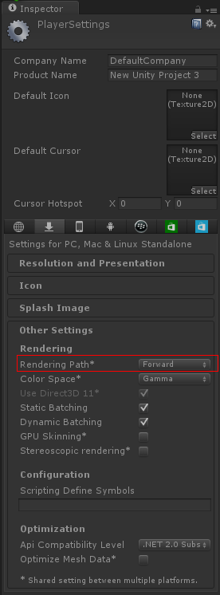
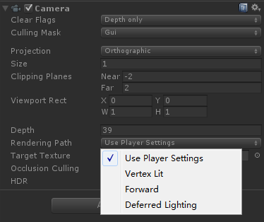
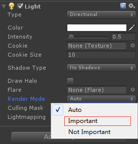

Unity的渲染路径
作者：追风剑情 发布于：2016-9-27 16:13 分类：Shader
在Unity里，渲染路径(Rendering Path)决定了光照是如何应用到Unity Shader中的。因此，如果要和光源打交道，我们需要为每个Pass指定它使用的渲染路径，只有这样我们才能在Unity Shader中访问到Unity为我们准备好的光照信息。
Unity支持多种类型的渲染路径。在Unity5.0版本之前，主要有3种：前向渲染路径(Forward RenderingPath)、延迟渲染路径(Deferred Rendering Path)和顶点照明渲染路径(Vertex Lit Rendering Path)。但在Unity5.0版本以后，Unity做了很多更改，主要有两个变化：首先，顶点照明渲染路径已经被Unity抛弃(但目前仍然可以对之前使用了顶点照明渲染路径的Unity Shader兼容);其次，新的延迟渲染路径代替了原来的延迟渲染路径(同样，目前也提供了对较旧版本的兼容)。
为整个项目设置渲染路径:
Edit->Project Settings->Player->Other Settings->Rendering Path

但有时，我们希望可以使用多个渲染路径，例如摄像机A渲染的物体使用前向渲染路径，而摄像机B渲染的物体使用延迟渲染路径。这时，我们可以在每个摄像机的渲染路径设置中设置该摄像机使用的渲染路径，以覆盖Project Setting中的设置。如图所示。

需要注意的是，如果当前的显卡并不支持所选择的渲染路径，Unity会自动使用更低一级的渲染路径。例如，如果一个GPU不支持延迟渲染，那么Unity就会使用前向渲染。完成了渲染路径的设置后，我们就可以在每个Pass中使用标签来指定该Pass使用的渲染路径。这是通过设置Pass的LightMode标签实现的。不同类型的渲染路径可能会包含多种标签设置。例如：
Pass {
//告诉Unity该Pass使用前向渲染路径中的ForwardBase路径。
Tags { "LightMode" = "ForwardBase" }
}
| 标签名 | 描述 |
| Always | 不管使用哪种渲染路径，该Pass总是会被渲染，但不会计算任何光照 |
| ForwardBase | 用于前向渲染。该Pass会计算环境光、最重要的平行光、逐顶点/SH光源和Lightmaps |
| ForwardAdd | 用于前向渲染。该Pass会计算额外的逐像素光源，每个Pass对应一个光源 |
| Deferred | 用于延迟渲染。该Pass会渲染G缓冲(G-buffer) |
| ShadowCaster | 把物体的深度信息渲染到阴影映射纹理(shadowmap)或一张深度纹理中 |
| PrepassBase | 用于遗留的延迟渲染。该Pass会渲染法线和高光反射的指数部分 |
| PrepassFinal | 用于遗留的延迟渲染。该Pass通过合并纹理、光照和自发光来渲染得到最后的颜色 |
| Vertex、VertexLMRGBM和VertexLM | 用于遗留的顶点照明渲染 |
只有指定了渲染路径，Unity才会为内置光照变量赋上正确的值。我们才能在Unity Shader中访问这些属性值。如果我们没有指定任何渲染路径(实际上，在unity5.x版本中如果使用了前向渲染又没有为Pass指定任何前向渲染适合的标签，就会被当成一个和顶点照明渲染路径等同的Pass),那么一些光照变量很可能不会被正确赋值，我们计算出的效果也就很有可能是错误的。
前向渲染路径
前向渲染路径是传统的渲染方式，也是我们最常用的一种渲染路径。
1. 前向渲染路径的原理
每进行一次完整的前向渲染，我们需要渲染该对象的渲染图元，并计算两个缓冲区的信息:一个是颜色缓冲区，一个是深度缓冲区。我们利用深度缓冲来决定一个片元是否可见，如果可见就更新颜色缓冲区中的颜色值。我们可以用下面的伪代码来描述前向渲染路径的大致过程：
Pass {
for (each primitive in this model) {
for (each fragment covered by this primitive) {
if (failed in depth test) {
//如果没有通过深度测试，说明该片元是不可见的
discard;
} else {
//如果该片元可见
//就进行光照计算
float4 color = Shading(materialInfo, pos, normal, lightDir, viewDir);
//更新帧缓冲
writeFrameBuffer(fragment, color);
}
}
}
}
对于每个逐像素光源，我们都需要进行上面一次完整的渲染流程。如果一个物体在多个逐像素光源的影响区域内，那么该物体就需要执行多个Pass，每个Pass计算一个逐像素光源的光照结果，然后在帧缓冲中把这些光照结果混合起来得到最终的颜色值。假设，场景中有N个物体，每个物体受M个光源影响，那么要渲染整个场景一共需要N*M个Pass。可以看出，如果有大量逐像素光照，那么需要执行的Pass数目也会很大。因此，渲染引擎通常会限制每个物体的逐像素光照的数目。
Unity中的前向渲染
事实上，一个Pass不仅仅可以用来计算逐像素光照，它也可以用来计算逐顶点等其他光照。这取决于光照计算所处流水线阶段以及计算时使用的数学模型。当我们渲染一个物体时，Unity会计算哪些光源照亮了它，以及这些光源照亮该物体的方式。
在Unity中，前向渲染路径有3种处理光照(即照亮物体)的方式；逐顶点处理、逐像素处理、球谐函数(Spherical Harmonics, SH)处理。而决定一个光源使用哪种处理模式取决于它的类型和渲染模式。光源类型指的是该光源是平行光还是其他类型的光源，而光源的渲染模式指的是该光源是否是重要的(Important)。如果我们把一个光照的模式设置为Important,意味着我们告诉Unity，“嘿老兄，这个光源很重要，我希望你可以认真对待它，把它当成一个逐像素光源来处理!”我们可以在光源的Light组件中设置这些属性，如图：

- 场景中最亮的平行光总是按逐像素处理的。
- 渲染模式被设置成Not Important的光源，会按逐顶点或者SH处理。
- 渲染模式被设置成Important的光源，会按逐像素处理。
- 如果根据以上规则得到的逐像素光源数量小于Quality Setting中的逐像素光源数量(Pixel Light Count),会有更多的光源以逐像素的方式进行渲染。

那么，在哪里进行光照计算呢？当然是在Pass里。前面提到过，前向渲染有两种Pass：Base Pass和Additional Pass。
前向渲染的两种Pass
1、Base Pass
可实现的光照效果:
光照纹理
环境光
自发光
阴影(平行光的阴影)
(1)渲染设置
Tags { "LightMode"="ForwardBase" }
#pragma multi_compile_fwdbase
(2)光照计算
一个逐像素的平行光以及所有逐顶点和SH光源
2、Additional Pass
可实现的光照效果:
默认情况下不支持阴影，但可以通过使用#pragma multi_compile_fwdadd_fullshadows编译指令来开启阴影
(1)渲染设置
Tags { "LightMode"="ForwardAdd" }
Blend One One
#pragma multi_compile_fwdadd
(2)光照计算
其他影响该物体的逐像素光源，每个光源执行一次Pass
- 首先，可以发现在渲染设置中，我们除了设置了Pass的标签外，还使用了#pragma multi_compile_fwdbase这样的编译指令。虽然#pragma multi_compile_fwdbase和#pragma multi_compile_fwdadd在官方文档中还没有给出相关说明，但实验表明，只有分别为Base Pass和Additional Pass使用这两个编译指令，我们才可以在相关的Pass中得到一些正确的光照变量，例如光照衰减值等。
- 在Base Pass中，我们可以访问光照纹理(lightmap)。
- Base Pass中渲染的平行光默认是支持阴影的(如果开启了光源的阴影功能)，而Additional Pass中渲染的光源默认情况下是没有阴影效果的，即便我们在它的Light组件中设置了有阴影的Shadow Type。但我们可以在Additional Pass中使用#pragma multi_compile_fwdadd_fullshadows代替#pragma multi_compile_fwdadd编译指令，为点光源和聚光灯开启阴影效果，但这需要Unity在内部使用更多的Shader变种。
- 环境光和自发光也是在Base Pass中计算的。这是因为，对于一个物体来说，环境光和自发光我们只希望计算一次即可，而如果我们在Additional Pass中计算这两种光照，就会造成叠加多次环境光和自发光，这不是我们想要的。
- 在Additional Pass的渲染设置中，我们还开启和设置了混合模式。这是因为，我们希望每个AdditionalPass可以与上一次的光照结果在帧缓存中进行叠加，从而得到最终的有多个光照的渲染效果。如果我们没有开启和设置混合模式，那么Additional Pass的渲染结果会覆盖掉之前的渲染结果，看起来就好像该物体只受该光源的影响。通常情况下，我们选择的混合模式是Blend One One。
- 对于前向渲染来说，一个Unity Shader通常会定义一个Base Pass(Base Pass也可以定义多次,例如需要双面渲染等情况)以及一个Additional Pass。一个Base Pass仅会执行一次(定义了多个Base Pass的情况除外),而一个Additional Pass会根据影响该物体的其他逐像素光源的数目被多次调用，即每个逐像素光源会执行一次Additional Pass。
上面给出的光照计算是通常情况下我们在每种Pass中进行的计算。实际上，渲染路径的设置用于告诉Unity该Pass在前向渲染路径中的位置，然后底层的渲染引擎会进行相关计算并填充一些内置变量(如_LightColor0等),如何使用这些内置变量进行计算完全取决于开发者的选择。例如，我们完全可以利用Unity提供的内置变量在Base Pass中只进行逐顶点光照；同样,我们也完全可以在Additional Pass中按逐顶点的方式进行光照计算，不进行任何逐像素光照计算。
| 名称 | 类型 | 描述 |
| _LightColor0 | float4 | 该Pass处理的逐像素光源的颜色 |
| _WorldSpaceLightPos0 | float4 | _WorldSpaceLightPos0.xyz是该Pass处理的逐像素光源的位置。如果该光源是平行光，那么_WorldSpaceLightPos0.w是0，其他光源类型w值为1 |
| _LightMatrix0 | float4x4 | 从世界空间到光源空间的变换矩阵。可以用于采样cookie和光强衰减(attenuation)纹理 |
|
unity_4LightPosX0,unity_4LightPosY0, unity_4LightPosZ0 |
float4 | 仅用于Base Pass。前4个非重要的点光源在世界空间中的位置 |
| unity_4LightAtten0 | float4 | 仅用于Base Pass。存储了前4个非重要的点光源的衰减因子 |
| unity_LightColor | half4[4] | 仅用于Base Pass。存储了前4个非重要的点光源的颜色 |
| 函数名 | 描述 |
| float3 WorldSpaceLightDir(float4 v) | 仅可用于前向渲染中。输入一个模型空间中的顶点位置，返回世界空间中从该点到光源的光照方向。内部实现使用了UnityWorldSpaceLightDir函数。没有被归一化 |
| float3 UnityWorldSpaceLightDir(float4 v) | 仅可用于前向渲染中。输入一个世界空间中的顶点位置，返回世界空间中从该点到光源的光照方向。没有被归一化 |
| float3 ObjSpaceLightDir(float4 v) | 仅可用于前向渲染中。输入一个模型空间中的顶点位置，返回模型空间中从该点到光源的光照方向。没有被归一化 |
| float3 Shade4PointLights(...) |
仅可用于前向渲染中。计算四个点光源的光照，它的参数是已经打包进矢量的光照数据，通常就是前向渲染可以使用的内置光照变量，如unity_4LightPosX0、unity_4LightPosY0、unity_4LightPosZ0、unity_LightColor0和unity_4LightAtten0等。前向渲染通常会使用这个函数来计算逐顶点光照 |
需要说明的是，上表给出的变量和函数并不是完整的，一些前向渲染可以使用的内置变量和函数官方文档中并没有给出说明。
顶点照明渲染路径
顶点照明渲染路径是对硬件配置要求最少、运算性能最高，但同时也是得到的效果最差的一种类型，它不支持那些逐像素才能得到的效果，例如阴影、法线映射、高精度的高光反射等。实际上，它仅仅是前向渲染路径的一个子集，也就是说，所有可以在顶点照明渲染路径中实现的功能都可以在前向渲染路径中完成。就如它的名字一样，顶点照明渲染路径只是使用了逐顶点的方式来计算光照，并没有什么神奇的地方。实际上，我们在上面的前向渲染路径中也可以计算一些逐顶点的光源。但如果选择使用顶点照明渲染路径，那么Unity会只填充那些逐顶点相关的光源变量，意味着我们不可以使用一些逐像素光照变量。
1. Unity中的顶点照明渲染
顶点照明渲染路径通常在一个Pass中就可以完成对物体的渲染。在这个Pass中，我们会计算我们关心的所有光源对该物体的照明，并且这个计算是按逐顶点处理的。这是Unity中最快速的渲染路径，并且具有最广泛的硬件支持(但是游戏机上并不支持这种路径)。
由于顶点照明渲染路径仅仅是前向渲染路径的一个子集，结果是，Unity5中将顶点照明渲染路径作为一个遗留的渲染路径，在未来的版本中，顶点照明渲染路径的相关设定可能会被移除。
2. 可访问的内置变量和函数
在Unity中，我们可以在一个顶点照明的Pass中最多访问到8个逐顶点光源。如果我们只需要渲染其中两个光源对物体的照明，可以仅使用下表中内置光照数据的前两个。如果影响该物体的光源数目小于8，那么数组中剩下的光源颜色会设置成黑色。
| 名称 | 类型 | 描述 |
| unity_LightColor | half4[8] | 光源颜色 |
| unity_LightPosition | float4[8] | xyz分量是视角空间中的光源位置。如果光源是平行光，那么z分量值为0，其他光源类型z分量值为1 |
| unity_LightAtten | half4[8] | 光源衰减因子。如果光源是聚光灯，x分量是cos(spotAngle/2)，y分量是1/cos(spotAngle/4)；如果是其他类型的光源，x分量是-1，y分量是1。z分量是衰减的平方，w分量是光源范围开根号的结果 |
| unity_SpotDirection | float4[8] | 如果光源是聚光灯的话，值为视角空间的聚光灯的位置；如果是其他类型的光源，值为(0,0,1,0) |
可以看出，一些变量我们同样可以在前向渲染路径中使用，例如unity_LightColor。但这些变量数组的维度和数值在不同渲染路径中的值是不同的。
| 函数名 | 描述 |
| float3 ShadeVertexLights(float4 vertex, float3 normal) | 输入模型空间中的顶点位置和法线，计算四个逐顶点光源的光照以及环境光。内部实现实际上调用了ShadeVertexLightsFull函数 |
| float3 ShadeVertexLightsFull(float4 vertex, float3 normal, int lightCount, bool spotLight) | 输入模型空间中的顶点位置和法线，计算lightCount个光源的光照以及环境光。如果spotLight值为true，那么这些光源会被当成聚光灯来处理，虽然结果更精确，但计算更加耗时； 否则，按点光源处理 |
延迟渲染路径
前向渲染的问题是：当场景中包含大量实时光源时，前向渲染的性能会急速下降。例如，如果我们在场景的某一块区域放置了多个光源，这些光源影响的区域互相重叠，那么为了得到最终的光照效果，我们就需要为该区域内的每个物体执行多个Pass来计算不同光源对该物体的光照结果，然后在颜色缓存中把这些结果混合起来得到最终的光照。然而，每执行一个Pass我们都需要重新渲染一遍物体，但很多计算实际上是重复的。
延迟渲染是一种更古老的渲染方法，但由于上述前向渲染可能造成的瓶颈问题，近几年又流行起来。除了前向渲染中使用的颜色缓冲和深度缓冲外，延迟渲染还会利用额外的缓冲区，这些缓冲区也被称为G缓冲(G-buffer)，其中G是英文Geometry的缩写。G缓冲区存储了我们所关心的表面(通常指的是离摄像机最近的表面)的其他信息，例如该表面的法线、位置、用于光照计算的材质属性等。
1. 延迟渲染的原理
延迟渲染主要包含两个Pass。在第一个Pass中，我们不进行任何光照计算，而是仅仅计算哪些片元是可见的，这主要是通过深度缓冲技术来实现，当发现一个片元是可见的，我们就把它的相关信息存储到G缓冲区中。然后，在第二个Pass中，我们利用G缓冲区的各个片元信息，例如表面法线、视角方向、漫反射系数等，进行真正的光照计算。
延迟渲染的过程大致可以用下面的伪代码来描述：
Pass 1 {
//第一个Pass不进行真正的光照计算
//仅仅把光照计算需要的信息存储到G缓冲中
for (each primitive in this model) {
for (each fragment covered by this primitive) {
if (failed in depth test) {
//如果没有通过深度测试，说明该片元是不可见的
discard;
} else {
//如果该片元可见
//就把需要的信息存储到G缓冲中
writeGBuffer(materialInfo, pos, normal, lightDir, viewDir);
}
}
}
}
Pass 2 {
//利用G缓冲中的信息进行真正的光照计算
for (each pixel in the screen) {
if (the pixel is valid) {
//如果该像素是有效的
//读取它对应的G缓冲中的信息
readGBuffer(pixel, materialInfo, pos, normal, lightDir, viewDir);
//根据读取到的信息进行光照计算
float4 color = Shading(materialInfo, pos, normal, lightDir, viewDir);
//更新帧缓冲
writeFrameBuffer(pixel, color);
}
}
}
可以看出，延迟渲染使用的Pass数目通常就是两个，这跟场景中包含的光源数目是没有关系的。换句话说，延迟渲染的效率不依赖于场景的复杂度，而是和我们使用的屏幕空间的大小有关。这是因为，我们需要的信息都存储在缓冲区中，而这些缓冲区可以理解成是一张张2D图像，我们的计算实际上就是在这些图像空间中进行的。
2. Unity中的延迟渲染
Unity有两种延迟渲染路径，一种是遗留的延迟渲染路径，即Unity5之前使用的延迟渲染路径，而另一种是Unity5.x中使用的延迟渲染路径。如果游戏中使用了大量的实时光照，那么我们可能希望选择延迟渲染路径，但这种路径需要一定的硬件支持。
新旧延迟渲染路径之间的差别很小，只是使用了不同的技术来权衡不同的需求。例如，较旧版本的延迟渲染路径不支持Unity5的基于物理的Standard Shader。以下我们仅讨论Unity5后使用的延迟渲染路径。对于遗留的延迟渲染路径，可以在官方文档(https://docs.unity3d.com/Manual/RenderTech-DeferredLighting.html)找到更多资料。
对于延迟渲染路径来说，它最适合在场景中光源数目很多、如果使用前向渲染会造成瓶颈的情况下使用。而且，延迟渲染路径中的每个光源都可以按逐像素的方式处理。但是，延迟渲染也有一些缺点。
- 不支持真正的抗锯齿(anti-aliasing)功能。
- 不能处理半透明物体。
- 对显卡有一定要求。如果要使用延迟渲染的话，显卡必须支持MRT(Multiple Render Targets)、Shader Mode 3.0及以上、深度渲染纹理以及双面的模板缓冲。
当使用延迟渲染时，Unity要求我们提供两个Pass。
(1) 第一个Pass用于渲染G缓冲。在这个Pass中，我们会把物体的漫反射颜色、高光反射颜色、平滑度、法线、自发光和深度等信息渲染到屏幕空间的G缓冲区中。对于每个物体来说，这个Pass仅会执行一次。
(2) 第二个Pass用于计算真正的光照模型。这个Pass会使用上一个Pass中渲染的数据来计算最终的光照颜色，再存储到帧缓冲中。
- RT0: 格式是ARGB32,RGB通道用于存储漫反射颜色，A通道没有被使用。
- RT1: 格式是ARGB32,RGB通道用于存储高光反射颜色，A通道用于存储高光反射的指数部分。
- RT2: 格式是ARGB2101010,RGB通道用于存储法线，A通道没有被使用。
- RT3: 格式是ARGB32(非HDR)或ARGBHalf(HDR)，用于存储自发光+lightmap+反射探针(reflection probes)。
- 深度缓冲和模板缓冲。
当在第二个Pass中计算光照时，默认情况下仅可以使用Unity内置的Standard光照模型。如果我们想要使用其他的光照模型，就需要替换掉原有的Internal-DeferredShading.shader文件。更详细的信息可以访问官方文档(https://docs.unity3d.com/Manual/RenderTech-DeferredShading.html)。
| 名称 | 类型 | 描述 |
| _LightColor | float4 | 光源颜色 |
| _LightMatrix0 | float4x4 | 从世界空间到光源空间的变换矩阵。可以用于采样cookie和光强衰减纹理 |
选择哪种渲染路径？
Unity的官方文档(http://docs.unity3d.com/Manual/RenderingPaths.html)中给出了4种渲染路径(前向渲染路径、延迟渲染路径、遗留的延迟渲染路径和顶点照明渲染路径)的详细比较，包括它们的特性比较(是否支持逐像素光照、半透明物体、实时阴影等)、性能比较以及平台支持。
总体来说，我们需要根据游戏发布的目标平台来选择渲染路径。如果当前显卡不支持所选渲染路径，那么Unity会自动使用比其低一级的渲染路径。
标签: Shader
日历
最新文章
随机文章
热门文章
分类

存档
- 2022年2月(2)
- 2022年1月(8)
- 2021年12月(5)
- 2021年11月(3)
- 2021年10月(4)
- 2021年9月(9)
- 2021年8月(14)
- 2021年7月(8)
- 2021年6月(5)
- 2021年5月(2)
- 2021年4月(3)
- 2021年3月(7)
- 2021年2月(2)
- 2021年1月(8)
- 2020年12月(7)
- 2020年11月(2)
- 2020年10月(6)
- 2020年9月(9)
- 2020年8月(10)
- 2020年7月(9)
- 2020年6月(18)
- 2020年5月(4)
- 2020年4月(25)
- 2020年3月(38)
- 2020年1月(21)
- 2019年12月(13)
- 2019年11月(29)
- 2019年10月(44)
- 2019年9月(17)
- 2019年8月(18)
- 2019年7月(25)
- 2019年6月(25)
- 2019年5月(17)
- 2019年4月(10)
- 2019年3月(36)
- 2019年2月(35)
- 2019年1月(28)
- 2018年12月(30)
- 2018年11月(22)
- 2018年10月(4)
- 2018年9月(7)
- 2018年8月(13)
- 2018年7月(13)
- 2018年6月(6)
- 2018年5月(5)
- 2018年4月(13)
- 2018年3月(5)
- 2018年2月(3)
- 2018年1月(8)
- 2017年12月(35)
- 2017年11月(17)
- 2017年10月(16)
- 2017年9月(17)
- 2017年8月(20)
- 2017年7月(34)
- 2017年6月(17)
- 2017年5月(15)
- 2017年4月(32)
- 2017年3月(8)
- 2017年2月(2)
- 2017年1月(5)
- 2016年12月(14)
- 2016年11月(26)
- 2016年10月(12)
- 2016年9月(25)
- 2016年8月(32)
- 2016年7月(14)
- 2016年6月(21)
- 2016年5月(17)
- 2016年4月(13)
- 2016年3月(8)
- 2016年2月(8)
- 2016年1月(18)
- 2015年12月(13)
- 2015年11月(15)
- 2015年10月(12)
- 2015年9月(18)
- 2015年8月(21)
- 2015年7月(35)
- 2015年6月(13)
- 2015年5月(9)
- 2015年4月(4)
- 2015年3月(5)
- 2015年2月(4)
- 2015年1月(13)
- 2014年12月(7)
- 2014年11月(5)
- 2014年10月(4)
- 2014年9月(8)
- 2014年8月(16)
- 2014年7月(26)
- 2014年6月(22)
- 2014年5月(28)
- 2014年4月(15)
友情链接
- Unity官网
- Unity圣典
- Unity在线手册
- Unity中文手册(圣典)
- Unity官方中文论坛
- Unity游戏蛮牛用户文档
- Unity下载存档
- Unity引擎源码下载
- Unity服务
- Unity Ads
- wiki.unity3d
- Visual Studio Code官网
- SenseAR开发文档
- MSDN
- C# 参考
- C# 编程指南
- .NET Framework类库
- .NET 文档
- .NET 开发
- WPF官方文档
- uLua
- xLua
- SharpZipLib
- Protobuf-net
- Protobuf.js
- OpenSSL
- OPEN CASCADE
- JSON
- MessagePack
- C在线工具
- 9RIA天地会
- 游戏蛮牛
- GreenVPN
- 聚合数据
- 热云
- 融云
- 腾讯云
- 腾讯开放平台
- 腾讯游戏服务
- 腾讯游戏开发者平台
- 腾讯课堂
- 微信开放平台
- 腾讯实时音视频
- 腾讯即时通信IM
- 微信公众平台技术文档
- 白鹭引擎官网
- 白鹭引擎开放平台
- 白鹭引擎开发文档
- FairyGUI编辑器
- PureMVC-TypeScript
- 讯飞开放平台
- 亲加通讯云
- Cygwin
- Mono开发者联盟
- Scut游戏服务器引擎
- KBEngine游戏服务器引擎
- Photon游戏服务器引擎
- 码云
- SharpSvn
- 腾讯bugly
- 4399原创平台
- 开源中国
- Firebase
- Firebase-Admob-Unity
- google-services-unity
- Firebase SDK for Unity
- Google-Firebase-SDK
- AppsFlyer SDK
- android-repository
- CQASO
- Facebook开发者平台
- gradle下载
- GradleBuildTool下载
- Android Developers
- Google中国开发者
- AndroidDevTools
- Android社区
- Android开发工具
- Google Play Games Services
- Google商店
- Google APIs for Android
- 金钱豹VPN
- TouchSense SDK
- MakeHuman
- Online RSA Key Converter
- Windows UWP应用
- Visual Studio For Unity
- E时代IDC主机
- Open CASCADE Technology
- 慕课网
- 奇优广告联盟
- 阿里云服务器ECS
- 在线免费文字转语音系统
- AI Studio
- 网云穿
- 百度网盘开放平台
- 迅捷画图
- 菜鸟工具
- [CSDN] 程序员研修院
- 华为人脸识别
交流QQ群
-
Flash游戏设计: 86184192
Unity游戏设计: 171855449
游戏设计订阅号

捐赠 (用于支付服务器费用)
-
微信

支持宝

捐赠的朋友可与博主成为微信好友，点击下方【给我写信】给博主留言。